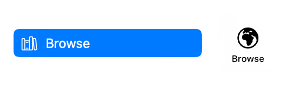
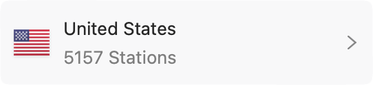

The Station Browser, accessed via the Browse tab, lets you browse by country to find specific stations.
At the top of the Station Browser will be a shortcut to the country matching your current system locale. At the bottom, you can find the Other category for stations not affiliated with any country in particular.
You can filter the list by using the Find in Countries or Find in Stations search field at the top of the Station Browser.
This filters only the current list. To perform a global search, or to search by tags, see Adding from Search.
See also: Adding from Search, Adding from the Station Browser